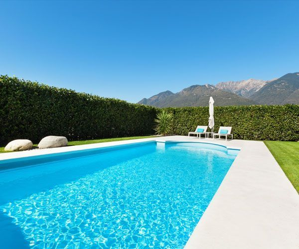

Llámanos : 637 40 60 50
Call us : 602 21 96 53
E-mail : construccionesmanin@gmail.com
Localízanos : Dirección en mapa
Bienvenidos/Benvinguts/Welcome/欢迎/أهلا بك/
Pensando en la reforma de tus sueños, nosotros te ayudamos!!
Casa rústica reformada.

Te ponemos el gresite en tu piscina.
Colocamos el azulejo que elijas.

Abiertos a cualquier propuesta, te escuchamos.

Nuestro objetivo:
Nuestra empresa de construcción y reformas en Castalla (Alicante) se caracteriza por la calidad y el buen servicio que prestamos. Nuestra práctica profesional está enfocada en asesorar al cliente de la mejor forma, respetando el presupuesto y los plazos de ejecución. Nuestro principal objetivo es conseguir la satisfacción del cliente, proporcionando un servicio de calidad y adaptado a sus condiciones.
Sobre nosotros:

Construcciones Manin es una empresa familiar gestionada por Germán Rico que cuenta con más de 20 años de experiencia en el sector.
Estamos capacitados para desarrollar cualquier reto en materia de construcción, desde reformas o rehabilitaciones. Realizamos todo tipo de proyectos: comunidades, fachadas, naves, chalets, piscinas y reformas de pisos. Facilitamos el día a día al cliente con asesoramiento y acompañamiento durante todo el proceso de la obra. Garantizamos la seguridad y la legalidad de todo el proyecto.
Looking for a builder:
If you are thinking to make an extension, changing tiles or remodeling your house we will help you. We will give you honest and sincere advice in what suits best to your project. With us you will make sure no one is ripping you off!!! To make any enquiries you can call Jose at +34 602 21 96 53 or head over to our contact page